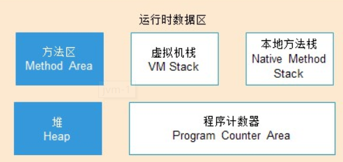
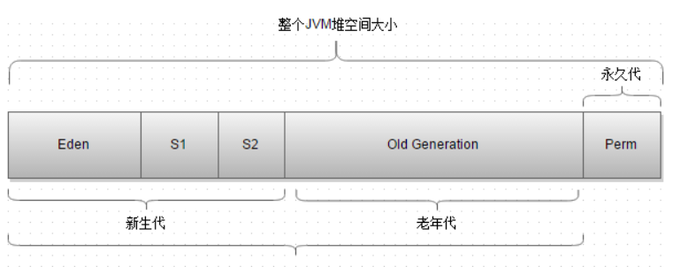
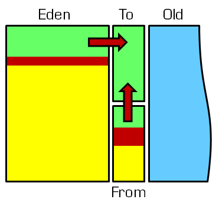
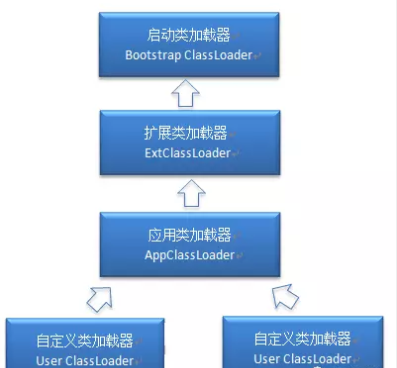

JAVA虚拟机
JAVA跨平台
我们都知道JAVA是一个可以跨平台的语言，那么它为什么可以跨平台？
Java不只是一种编程语言，还是一个完整的操作平台。Java之所以可以跨平台，这离不开JVM虚拟机。JVM是一个软件，在不同的平台上，JVM有不同的版本。Java在编译之后会生成一种.class文件，这种文件成为字节码文件。JVM虚拟机就是将Java编译后的.class文件翻译成特定平台下的机器码，然后运行。也就是说，在不同平台上装上平台对应的JVM虚拟机后，就可以将Java字节码文件转换，然后运行我们的Java程序。
Java编译后的结果是生成字节码，而不是机器码。字节码是不可以直接运行的，必须通过JVM再次翻译成机器码才可以运行。即使是将Java程序打包成可执行文件，也仍然需要JVM的支持才可以运行。跨平台的是Java程序，而不是JVM。JVM是用C/C++开发的，不能平台，不同的平台下JVM的版本是不同的。
JAVA虚拟机内存划分
在Java中，程序员把内存控制权利交给 Java 虚拟机而不用像c++为一个 new 操作去写对应的 delete/free 操作，因此不是很容易出现内存泄露和溢出的问题。
Java 虚拟机在执行 Java 程序的过程中会把它管理的内存划分成若干个不同的数据区域：

其中线程私有的有：虚拟机栈，本地方法栈，程序计数器；线程共共享的有堆，方法区，直接内存。
JAVA堆
Java 虚拟机所管理的内存中最大的一块，Java 堆是所有线程共享的一块内存区域，在虚拟机启动时创建。此内存区域的唯一目的就是存放对象实例，几乎所有的对象实例以及数组都在这里分配内存。同时它也是是垃圾收集器管理的主要区域，因此也被称作GC堆，Java堆还可以细分为：新生代和老年代：再细致一点有：Eden空间、From Survivor、To Survivor空间等。进一步划分的目的是更好地回收内存，或者更快地分配内存。(分代的唯一理由就是优化GC性能)

新生代分为：1个Eden区和2个Survivor区（分别叫from和to）。默认比例为8：1。我们通过图再看一下：

因为年轻代中的对象基本都是朝生夕死的(80%以上)，所以在年轻代的垃圾回收算法使用的是复制算法，复制算法的基本思想就是将内存分为两块，每次只用其中一块，当这一块内存用完，就将还活着的对象复制到另外一块上面。复制算法不会产生内存碎片。
一般情况下，新创建的对象都会被分配到Eden区，如果Eden区没有足够的空间时，虚拟机执行一次Minor GC。(一些大对象特殊处理：大对象直接进入老年代（大对象是指需要大量连续内存空间的对象）。这样做的目的是避免在Eden区和两个Survivor区之间发生大量的内存拷贝新生代采用复制算法收集内存),这些对象经过第一次Minor GC后，如果仍然存活，将会被移到Survivor区。对象在Survivor区中每熬过一次Minor GC，年龄就会增加1岁，当它的年龄增加到一定程度时，就会被移动到老年代中。
在GC开始的时候，对象只会存在于Eden区和名为“From”的Survivor区，Survivor区“To”是空的。紧接着进行GC，Eden区中所有存活的对象都会被复制到“To”，而在“From”区中，仍存活的对象会根据他们的年龄值来决定去向。年龄达到一定值(年龄阈值，可以通过-XX:MaxTenuringThreshold来设置)的对象会被移动到年老代中，没有达到阈值的对象会被复制到“To”区域。经过这次GC后，Eden区和From区已经被清空。这个时候，“From”和“To”会交换他们的角色，也就是新的“To”就是上次GC前的“From”，新的“From”就是上次GC前的“To”。不管怎样，都会保证名为To的Survivor区域是空的。Minor GC会一直重复这样的过程，直到“To”区被填满，“To”区被填满之后，会将所有对象移动到年老代中。
新生代和老年代的一些区别：新生代和老年代是针对于分代收集算法来定义的，新生代又分为Eden和Survivor两个区。加上老年代就这三个区。数据会首先分配到Eden区 当中（当然也有特殊情况，如果是大对象那么会直接放入到老年代（大对象是指需要大量连续内存空间的java对象）。），当Eden没有足够空间的时候就会 触发jvm发起一次Minor GC。如果对象经过一次Minor GC还存活，并且又能被Survivor空间接受，那么将被移动到Survivor空 间当中。并将其年龄设为1，对象在Survivor每熬过一次Minor GC，年龄就加1，当年龄达到一定的程度（默认为15）时，就会被晋升到老年代 中了，当然晋升老年代的年龄是可以设置的。其实新生代和老年代就是针对于对象做分区存储，更便于回收等等
有关年轻代的几个参数：
1.XX:NewSize和-XX:MaxNewSize
用于设置年轻代的大小，建议设为整个堆大小的1/3或者1/4,两个值设为一样大。
2.XX:SurvivorRatio
用于设置Eden和其中一个Survivor的比值，这个值也比较重要。默认8:1；
3.XX:+PrintTenuringDistribution
这个参数用于显示每次Minor GC时Survivor区中各个年龄段的对象的大小。
4-XX:InitialTenuringThreshol和-XX:MaxTenuringThreshold
用于设置晋升到老年代的对象年龄的最小值和最大值，每个对象在坚持过一次Minor GC之后，年龄就加1。
程序计数器
程序计数器的作用：字节码解释器通过改变程序计数器的值来选取下一条需要执行的字节码指令，从而实现代码的流程控制；在多线程的情况下，程序计数器用于记录当前线程执行的位置，从而当线程被切换回来的时候能够知道该线程上次运行到哪儿了。
注意：程序计数器是唯不会出现 OutOfMemoryError 的内存区域，它的生命周期随着线程的创建而创建，随着线程的结束而死亡。
JAVA虚拟机栈
Java虚拟机栈是由一个个栈帧组成，而每个栈帧中都拥有局部变量表、操作数栈、动态链接、方法出口信息。每个方法从被调用，直到被执行完。对应着一个栈帧在虚拟机中从入栈到出栈的过程
Java 虚拟机栈会出现两种异常：StackOverFlowError 和 OutOfMemoryError。第一个是如果线程请求的栈深度大于虚拟机所允许的深度抛出的错误，第二个则是虚拟机在动态扩展栈时无法申请到足够的内存空间抛出的异常。
通常说的栈就是指局部变量表部分，存放编译期间可知的8种基本数据类型，及对象引用和指令地址。局部变量表是在编译期间完成分配，当进入一个方法时，这个栈中的局部变量分配内存大小是确定的。
jvm 的局部变量表是做什么的？
存储局部变量、函数调用时传递参数，很多字节码指令都是对局部变量表和操作数栈进行操作的。
本地方法栈
该区域与虚拟机栈所发挥的作用非常相似，只是虚拟机栈为虚拟机执行 Java 方法服务，而本地方法栈则为使用到的本地操作系统（Native）方法服务，和平台有关的方法。
方法区
它用于存储已被虚拟机加载的类信息、常量、静态变量、即时编译器编译后的代码等数据，它有一个别名叫做 Non-Heap（非堆）也常称为永久代，垃圾收集行为在这个区域是比较少出现的，但并非数据进入方法区后就“永久存在”了。
类加载
什么是类的加载
类的加载指的是将类的.class文件中的二进制数据读入到内存中，将其放在运行时数据区的方法区内，然后在堆区创建一个java.lang.Class对象，用来封装类在方法区内的数据结构。类的加载的最终产品是位于堆区中的Class对象，Class对象封装了类在方法区内的数据结构，并且向Java程序员提供了访问方法区内的数据结构的接口。
类加载的过程
类加载主要分为以下五个步骤：加载，验证，准备，解析，初始化。
加载：程序运行之前jvm会把编译完成的.class二进制文件加载到内存，供程序使用，用到的就是类加载器classLoader。
验证：保证类加载的准确性，看是否是javac 编译的class 文件。
准备：为类的静态变量分配内存，将其初始化为默认值。
解析：把类中的符号引用转化为直接引用。
初始化：为类的静态变量赋予正确的初始值，上述的准备阶段为静态变量赋予的是虚拟机默认的初始值，此处赋予的才是程序编写者为变量分配的真正的初始值。
类加载基于的机制
Java类加载器基于三个机制：委托、可见性和单一性。委托就是将加载一个类的请求交给父类加载器，如果没有父类加载器或者父类加载器不给它加载再加载它，可见性是父类加载器不能看到子类的加载的类，但是子类的加载能看到父类的加载的类。单一性是指仅加载一个类一次，这是由委托机制确保子类加载器不会再次加载父类加载器加载过的类。
为什么要双亲委派？
保证java类库中的类不受用户类影响，防止用户自定义一个类库中的同名类，引起问题。
我们常见的有三种加载器：Bootstrap类加载器（加载java核心类库）、Extension类加载器（加载 Java 的扩展库）和System类加载器（Java 应用的类路径来加载 Java 类）
注意：使用不同的类加载器，你可以从不同的源地址加载同一个类，它们被视为不同的类。
类加载器并不需要等到某个类被“首次主动使用”时再加载它，JVM规范允许类加载器在预料某个类将要被使用时就预先加载它，如果在预先加载的过程中遇到了.class文件缺失或存在错误，类加载器必须在程序首次主动使用该类时才报告错误（LinkageError错误）如果这个类一直没有被程序主动使用，那么类加载器就不会报告错误
几个类加载器的层次关系：

自己写个String能加载吗
加载过程中会先检查类是否被已加载，检查顺序是自底向上，从Custom ClassLoader到BootStrap ClassLoader逐层检查，只要某个classloader已加载就视为已加载此类，保证此类只所有ClassLoader加载一次。而加载的顺序是自顶向下，也就是说当发现这个类没有的时候会先去让自己的父类去加载，父类没有再让儿子去加载，那么在这个例子中我们自己写的String应该是被Bootstrap ClassLoader加载了，所以App ClassLoader就不会再去加载我们写的String类了，导致我们写的String类是没有被加载的。但在应用的时候，需要用自己的类加载器去加载，否则，系统的类加载器永远只是去加载 jre.jar 包中的那个 java.lang.String。双亲委派机制是可以打破的， 所以，这些类都是可以重写的。 但是JVM出于安全的考虑， 你自己写的类 ， 不能用java.* 开头， 否则都不会被加载。 懂了吧， 总结一下就是： 可以写， 但是包名要改。
类初始化时机
只有当对类的主动使用的时候才会导致类的初始化，类的主动使用包括以下六种：
- 创建类的实例，也就是new的方式
- 访问某个类或接口的静态变量，或者对该静态变量赋值
- 调用类的静态方法
- 反射（如
Class.forName(“com.shengsiyuan.Test”)） - 初始化某个类的子类，则其父类也会被初始化
- Java虚拟机启动时被标明为启动类的类（
JavaTest），直接使用java.exe命令来运行某个主类
Java虚拟机结束生命周期
在如下几种情况下，Java虚拟机将结束生命周期：
执行了
System.exit()方法程序正常执行结束
程序在执行过程中遇到了异常或错误而异常终止
由于操作系统出现错误而导致Java虚拟机进程终止
JVM初始化步骤
假如这个类还没有被加载和连接，则程序先加载并连接该类
假如该类的直接父类还没有被初始化，则先初始化其直接父类
假如类中有初始化语句，则系统依次执行这些初始化语句
对象的创建
对象的创建的过程：
类加载检查—>分配内存—>初始化零值—>设置对象头—>执行 init 。
类加载检查： 虚拟机遇到一条 new 指令时，首先将去检查这个指令的参数是否能在常量池中定位到这个类的符号引用，并且检查这个符号引用代表的类是否已被加载过、解析和初始化过。如果没有，那必须先执行相应的类加载过程。
分配内存：类加载检查通过后，接下来虚拟机将为新生对象分配内存。分配方式有：指针碰撞 和 空闲列表两种。在实际开发过程中，创建对象是很频繁的事情，作为虚拟机来说，必须要保证线程是安全的。
初始化零值：虚拟机将分配到的内存空间都初始化为零值。
设置对象头：虚拟机要对对象进行必要的设置，例如这个对象是哪个类的实例、如何才能找到类的元数据信息、对象的哈希吗、对象的 GC 分代年龄等信息。 这些信息存放在对象头中。
执行 init ：在上面工作都完成之后，从虚拟机的视角来看，一个新的对象已经产生了，但从 Java 程序的视角来看，对象创建才刚开始，所以要执行程序写的 init 方法。
GC算法与垃圾回收
为什么需要垃圾回收以及什么时候GC
首先因为内存是有限的，在不断的分配内存空间而不回收的话内存迟早都会被消耗完，所以垃圾回收是必须的。
触发GC 的条件：
1.GC在优先级最低的线程中运行，一般在应用程序空闲即没有应用线程在运行时被调用。
2.Java堆内存不足时，GC会被调用。
触发Full GC：调用Sytem.GC()；老年代空间不足时；GC担保失败。
对象存活判断
判断对象是否存活一般有两种方式：
- 引用计数：每个对象有一个引用计数属性，新增一个引用时计数加1，引用释放时计数减1，计数为0时可以回收。此方法简单，无法解决对象相互循环引用的问题。
- 可达性分析（Reachability Analysis）：从GC Roots开始向下搜索，搜索所走过的路径称为引用链。当一个对象到GC Roots没有任何引用链相连时，则证明此对象是不可用的，不可达对象。能够作为GC Roots对象的有：虚拟机栈中引用的对象，方法区中的类静态属性引用的对象，方法区中常量引用的对象，本地方法栈中JNI引用的对象。
GC算法
标记—清除：程序暂停运行，启动GC，GC从堆或静态存储区开始遍历所有对象，判断对象是否“活”的对象，如果是活不删除，反之删除。判断是否“活”就是判断该对象是否有被其他对象引用，从链上去查找。当是活对象时，会给对象给个标记符号，死对象则不标记，遍历完后，第二次遍历时，只保留标记的对象，把所有没标记的对象都删除。
停止—复制：程序暂停运行，启动GC，GC从堆或静态存储区开始遍历所有对象，判断对象是否“活”的对象，如果是活不删除，反之删除。判断是否“活”就是判断该对象是否有被其他对象引用，从链上去查找。当是活对象时，GC会从另外堆里开避一个大空间，然后将活对象复制一份到新空间里，在复制时按着紧密排列，同时更新所有引用地址为新的地址，不活对象原封不动。遍历完后，再遍历一次，这次是将不活的对象彻底给删除。
优点：所有对象能够重新紧密排列，不会出现内存碎片，这对以后创建对象能提供更快的效率。
缺点：占用的内存空间大，要原对象的2倍空间；这种模式无论如何所有活的对象都要复制一份，假设遍历到最后，对象很稳定，只出现少量垃圾对象或者根本没垃圾对象，这时已经做了复制工作，浪费了资源。
标记—整理：标记-清除算法一样，不过不是直接对可回收对象进行清理，而是让所有存活对象都向一端移动，然后直接清理掉边界以外的内存。
分代收集：根据各块的特点采用最适当的收集算法。大批对象死去、少量对象存活的（新生代），使用复制算法，复制成本低；对象存活率高、没有额外空间进行分配担保的（老年代），采用标记-清理算法或者标记-整理算法。
垃圾收集器
CMS 垃圾收集器：获取最短回收停顿时间为目标的收集器。使用标记 - 清除算法。
初始标记(标记GCRoots能直接关联到的对象，时间很短)-> 并发标记(进行可达性分析过程，时间很长)-> 重新标记->并发清除(回收内存空间，时间很长)
G1收集器
并行和并发：使用多个CPU来缩短Stop The World停顿时间，与用户线程并发执行
分代收集：独立管理整个堆，但是能够采用不同的方式去处理新创建对象和已经存活了一段时间、熬过多次GC的旧对象，以获取更好的收集效果
空间整合：基于标记 - 整理算法，无内存碎片产生。
Java变量申明后存放的区域
- 寄存器：最快的存储区, 由编译器根据需求进行分配,我们在程序中无法控制.
- 栈：存放基本类型的变量数据和对象的引用，但对象本身不存放在栈中，而是存放在堆（
new出来的对象）或者常量池中（字符串常量对象存放在常量池中。） - 堆：存放所有
new出来的对象。 - 静态域：存放静态成员（
static定义的） - 常量池：存放字符串常量和基本类型常量（
public static final）。
栈和常量池中的数据是可以共享的，但是堆的数据是不可以共享的